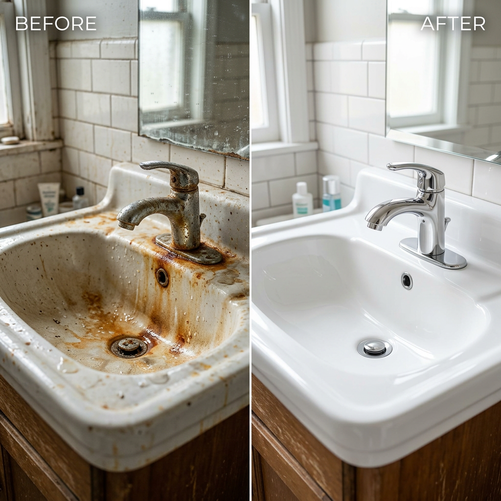
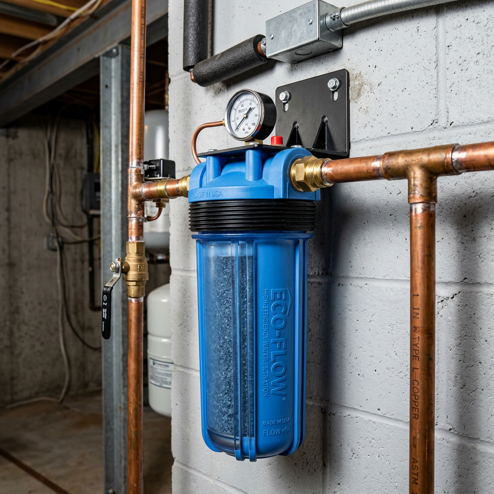

Best Iron Water Filter for Whole House: Stop Rust Stains and Metallic Taste Today
Is Your Water Ruining Your Home? The Hidden Cost of Iron
You turn on the tap, and there it is: that faint metallic smell. You look at your freshly washed white linens, and they have a dull, orange tint. Your sinks, toilets, and showers are perpetually stained with stubborn rust that no amount of scrubbing seems to fix. If this sounds familiar, you aren't just dealing with a cosmetic nuisance—you're dealing with high iron and manganese levels that are slowly destroying your plumbing and appliances.
Standard sediment filters aren't enough. To stop the rust at the source, you need a specialized iron water filter designed for high-capacity removal. In this guide, we break down the top-tier solution for high-intent homeowners who want to protect their investment and their health.

Before we dive into the deep technical specs, here is how the leading iron filtration technology stacks up against standard household filtration.
| Product Name | Primary Removal Focus | Filter Life | Verdict |
|---|---|---|---|
| Waterdrop Whole House Iron & Manganese Filter | Iron (up to 10ppm), Manganese, Sediment | Up to 12 Months | Best for Well Water & Heavy Staining |
| Standard Sediment Filter | Large Particles, Sand, Silt | 3-6 Months | Inadequate for Rust/Metallic Taste |
Deep Dive: Waterdrop Whole House Iron & Manganese Filter
When it comes to specialized filtration, the Waterdrop Whole House Iron & Manganese Filter stands in a league of its own. Unlike basic carbon blocks, this system utilizes advanced catalytic media specifically engineered to oxidize and trap dissolved iron and manganese before they reach your faucets.
Why It’s the Gold Standard for Iron Removal
The Waterdrop system is built for performance. It targets the very minerals that cause that 'rotten egg' smell and metallic tang. By installing this at your main water inlet, you are effectively creating a shield for your entire home.
- High-Capacity Filtration: Capable of handling iron levels up to 10ppm, which is significantly higher than most residential 'all-in-one' systems.
- Protect Your Appliances: By removing manganese and iron, you prevent scale buildup in your water heater, dishwasher, and washing machine, extending their lifespan by years.
- Efficient Flow Rate: Engineered to ensure that your shower pressure doesn't drop just because you're filtering out contaminants.
- Long-Lasting Performance: The high-grade media is designed to last up to a full year for the average household, meaning less time in the utility room and more time enjoying clean water.

The PAS Breakdown: Why You Can't Wait
Problem: Iron in your water is corrosive. It stains your surfaces, ruins your hair, and makes your drinking water taste like pennies.
Agitation: Every day you wait, those minerals are building up inside your pipes. This leads to reduced water pressure and eventual pipe failure. Think about the cost of replacing a water heater or a dishwasher—it’s ten times the cost of a quality iron water filter.
Solution: The Waterdrop system provides a 'set and forget' solution. It’s an investment in your home’s infrastructure that pays for itself in appliance longevity and peace of mind.
Installation and Maintenance
One of the biggest hurdles for homeowners is the fear of complex plumbing. Waterdrop has addressed this with a user-friendly design. The system features standard 1-inch NPT inlets and outlets, making it compatible with most US residential plumbing. While a professional install is always recommended, many DIY-savvy homeowners find the process straightforward.
Final Verdict: Is It Worth It?
If you are on a well system or live in an area with high mineral content, an iron water filter is not a luxury—it is a necessity. The Waterdrop Whole House Iron & Manganese Filter offers the best balance of filtration power, flow rate, and price on the market today. Stop scrubbing stains and start enjoying the water your family deserves.
Check Price on Official Store